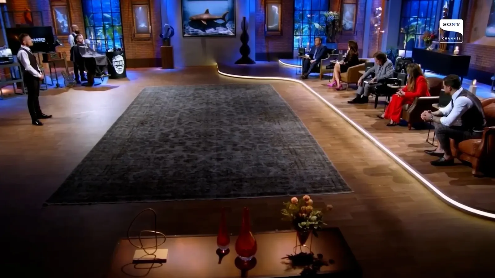
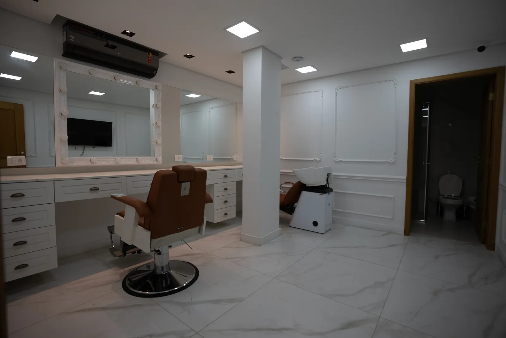
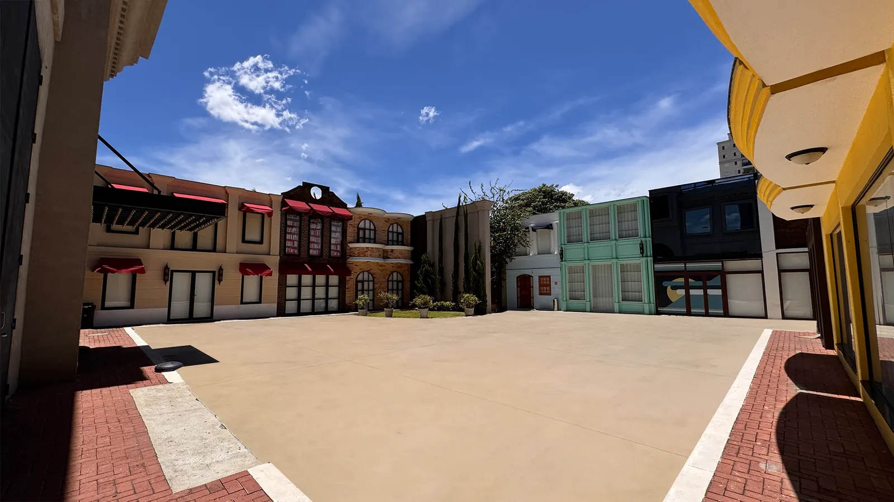
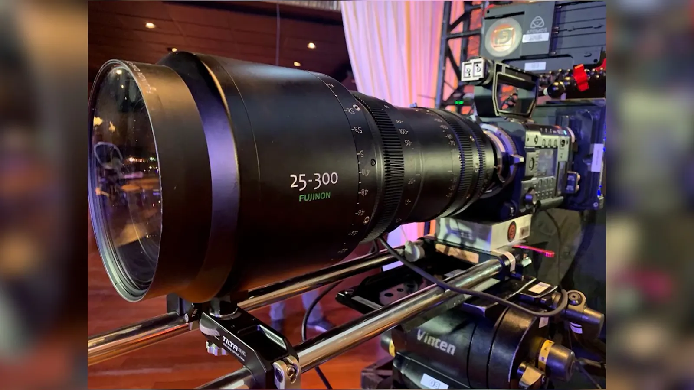
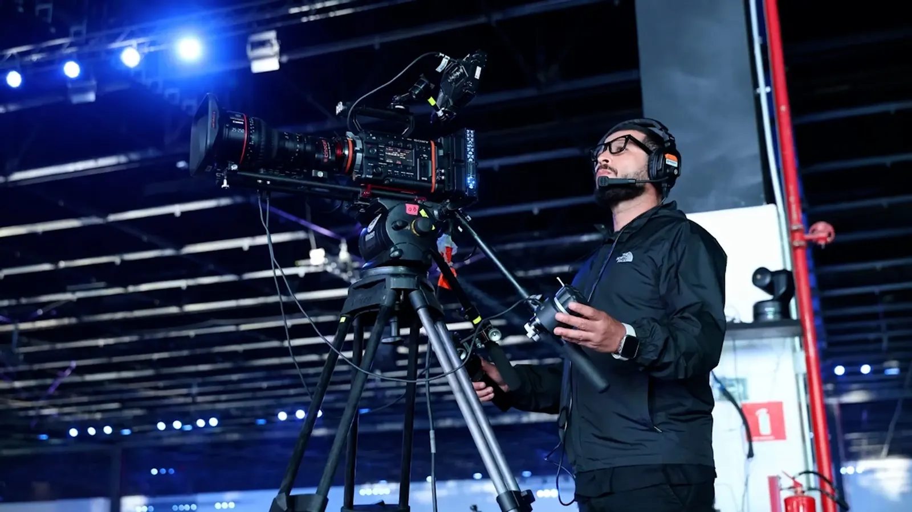
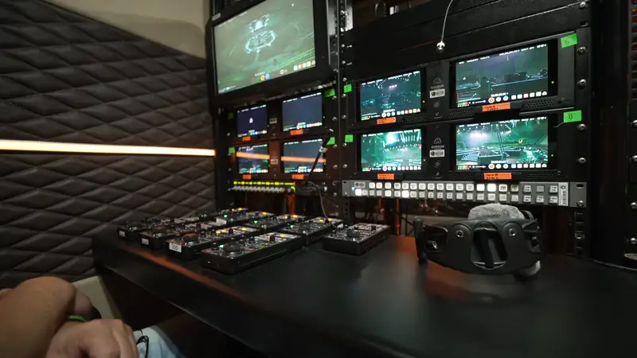
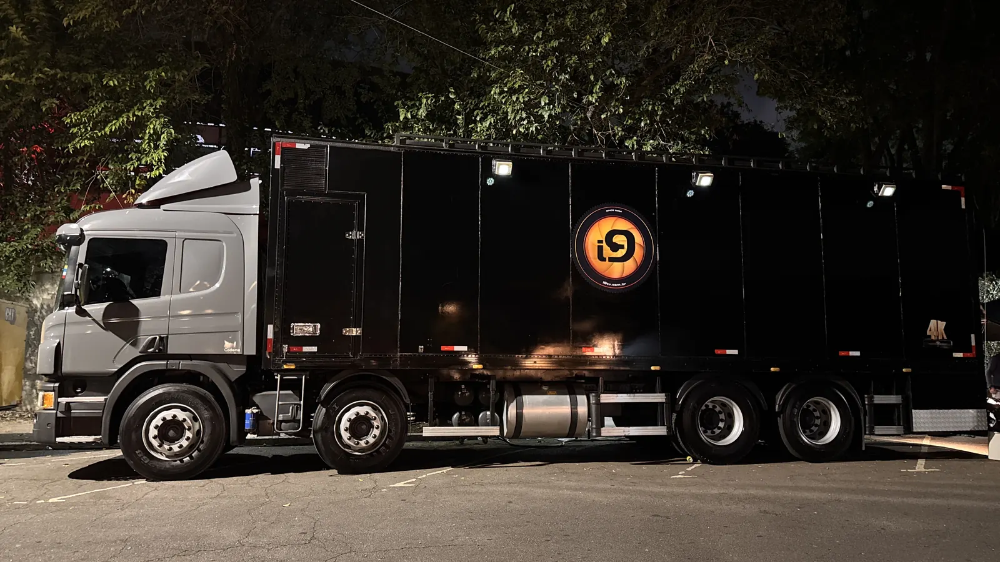

Stages, truck, gear and crews.
The base under everything we produce and broadcast, in Barra Funda, São Paulo. For hire with or without our team.
Estúdio 01. 667 m² under an 8 m ceiling.
Height for tall sets, cranes and lighting rigged overhead. Talk shows, novelas, commercials, music videos.




A street of our own.
A 600 m² backlot for open-air scenes, with power, support and crew close by, next to the stages.
For hire. With or without our team.
The facilities that carry our own productions, available to yours.

Estúdio 01, the 120 m² studio, a podcast room and a cyclorama, in Barra Funda. With or without crew and equipment.

Cameras, lenses, lighting, audio, monitoring, tripods, accessories, teleprompters, LED panels and mochilinks.

Camera, sound, lighting, video and engineering operators for shoots, shows and live broadcasts, in São Paulo and Manaus.

Editing, colour, sound, graphics and delivery to the spec of whoever airs it. We finish what we shoot and what you bring.

Up to 16 broadcast or cinema cameras, live cut, recording and signal in one truck.